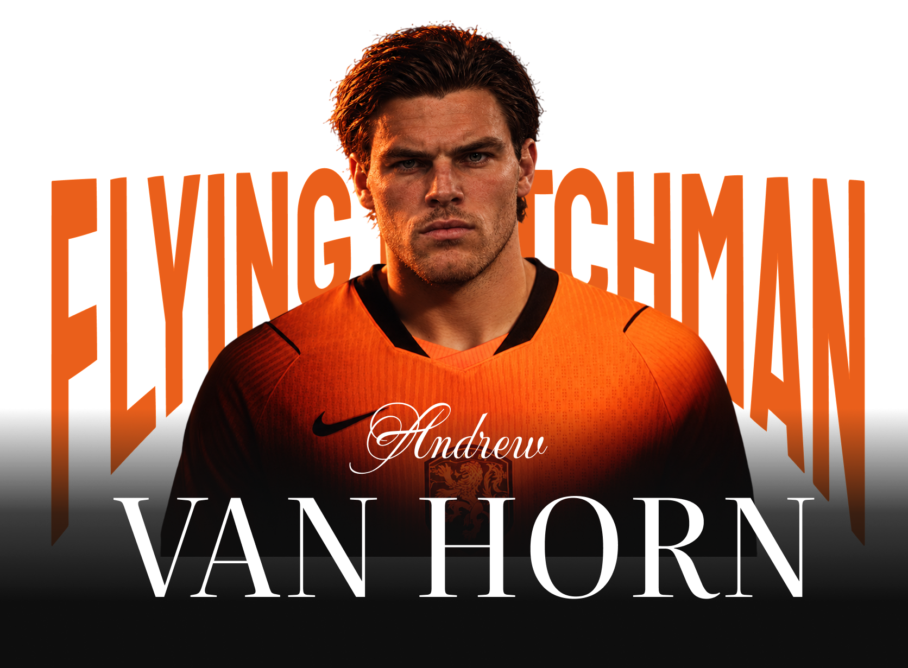
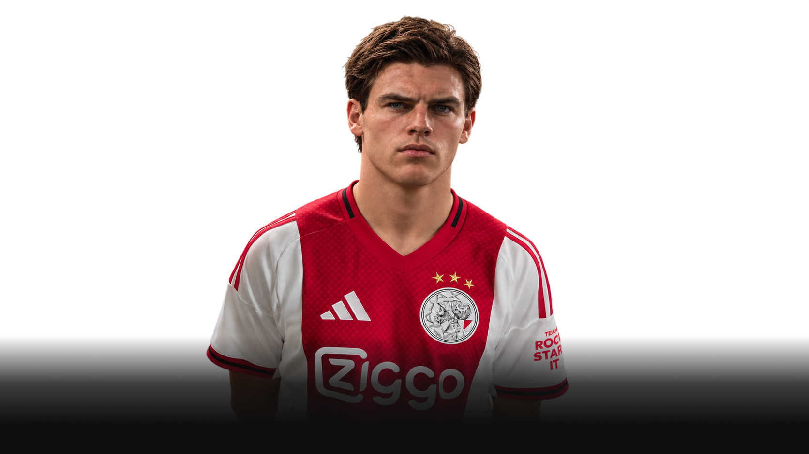
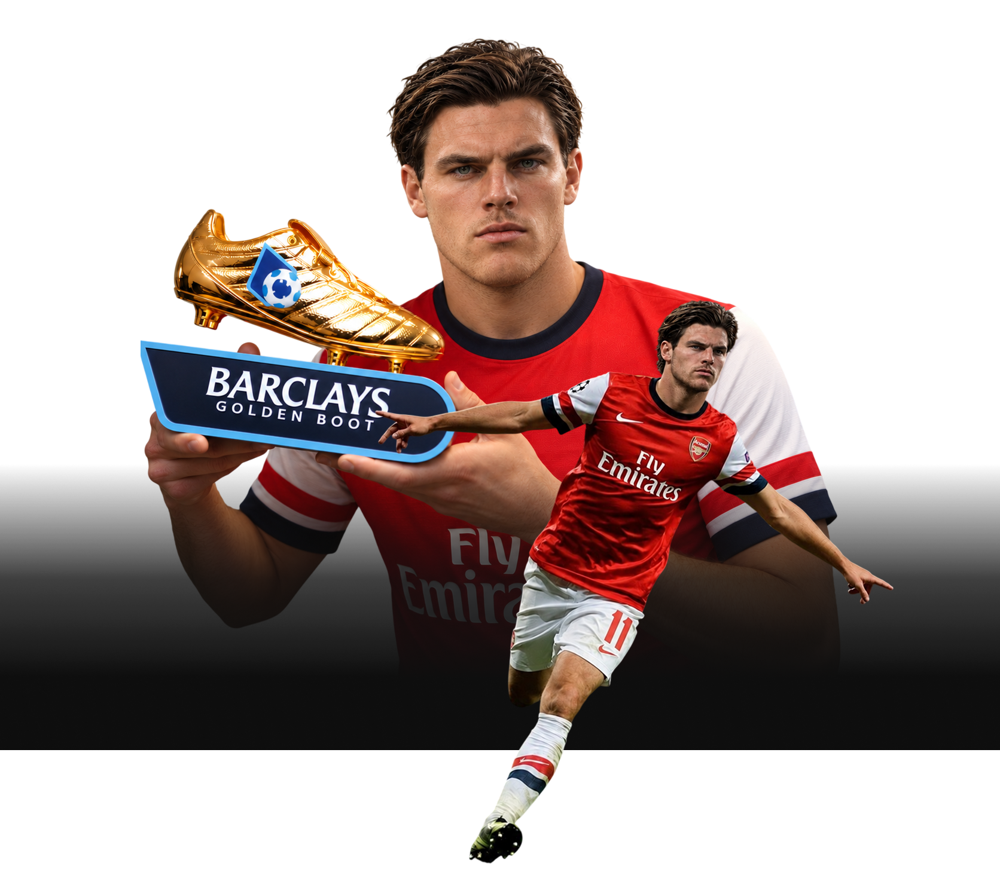
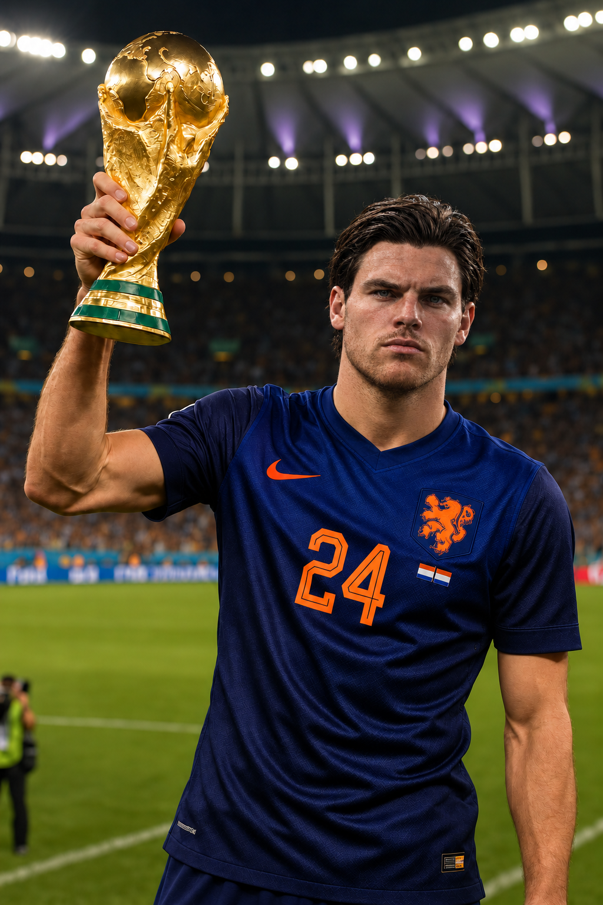
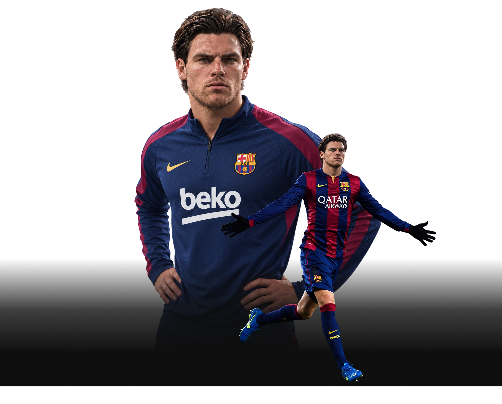
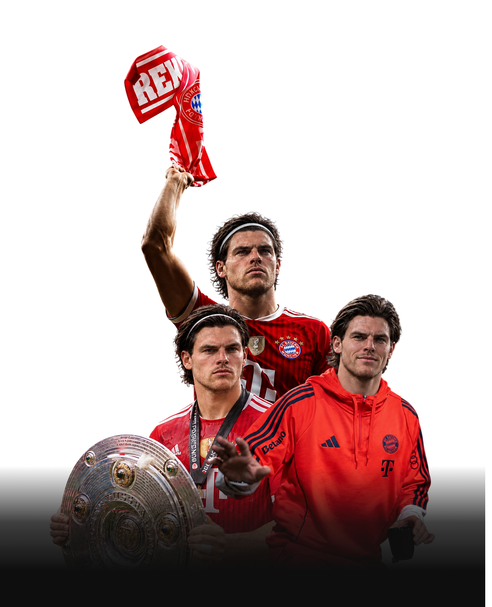
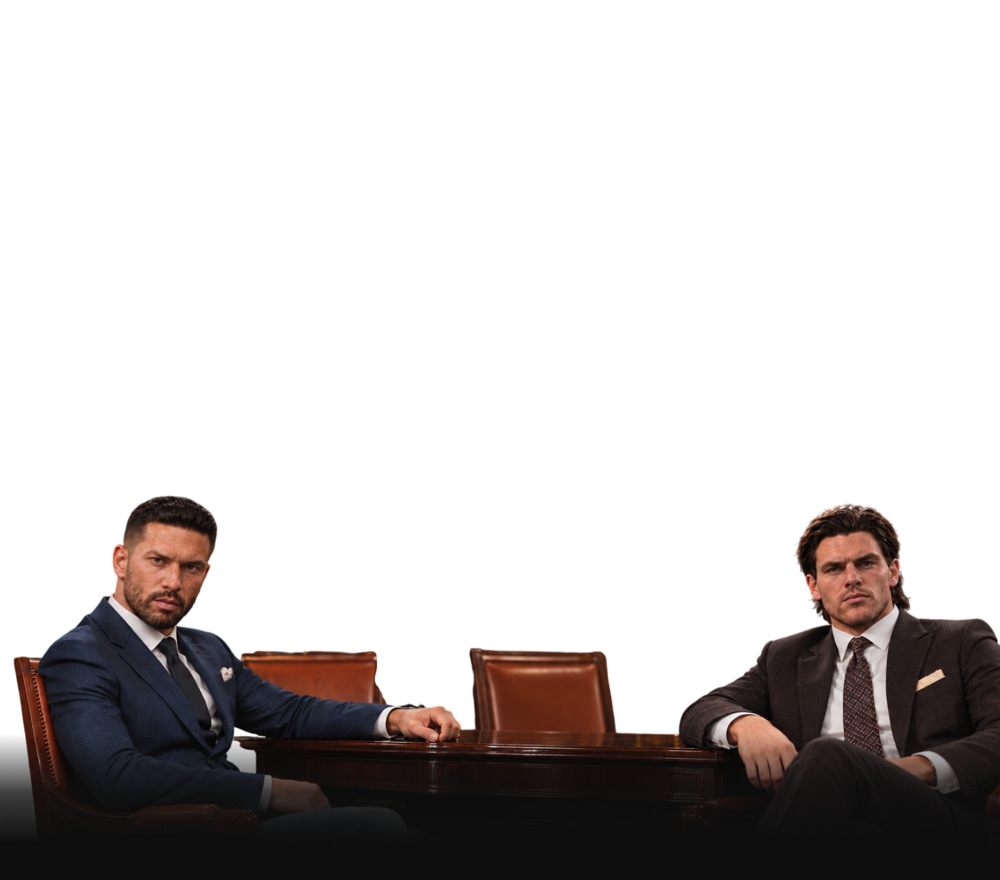
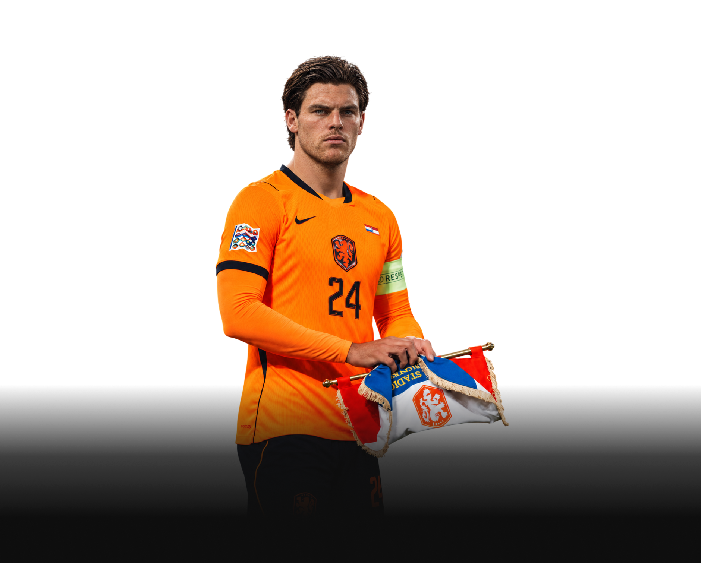

Andrew Van Hoorn · Нидерланды · Центральный нападающий / правый вингер

Эндрю Ван Хорн никогда не был похож на футболиста, которому необходимо постоянно доказывать собственную значимость. Он вырос в хороших условиях, получил возможность спокойно развиваться и с ранних лет относился к футболу не просто как к игре, а как к сложной системе, которую можно изучать, разбирать и совершенствовать. Он был отличником не только в учёбе, но и в понимании самого футбола: тактика, движение партнёров, расположение защитников и свободное пространство интересовали его не меньше, чем голы. Ван Хорн не был человеком, которому приходилось пробиваться исключительно за счёт характера. Его путь начался с таланта, хорошего воспитания и среды, позволившей этому таланту раскрыться.
Но комфортное детство не сделало его равнодушным к результату. Напротив, Эндрю с самого начала стремился понимать игру глубже, чем требовала его позиция. Он мог оценить атаку не только с точки зрения собственного движения, но и через то, что произойдёт с защитой после его рывка. Он понимал, как одним смещением освободить пространство партнёру, как заставить соперника выбрать неправильную позицию и как превратить, казалось бы, безобидное владение мячом в голевой момент. Впоследствии именно это сочетание футбольного интеллекта, дриблинга и инстинкта завершителя сделало Ван Хорна одним из самых необычных атакующих игроков своего поколения.

«Аякс» — школа свободного мышления
Футбольное становление Эндрю прошло через академию «Аякса» — среду, в которой ценят техническую подготовку, тактическую грамотность и умение принимать решения под давлением. Здесь он учился не просто обыгрывать соперников, а понимать, почему определённый финт работает, когда необходимо ускориться и каким образом движение одного игрока меняет структуру всей атаки. Голландская футбольная школа дала ему фундамент: контроль мяча, комбинационное мышление, работу с пространством и свободу, основанную на понимании командной системы. Ван Хорн не становился заложником схемы — он учился использовать её как основу для собственных решений.
При этом уже тогда в нём проявлялась индивидуальность. Эндрю обладал почти невероятным дриблингом и умел сохранять контроль мяча в ситуациях, когда большинство игроков предпочли бы отдать передачу. Его стиль напоминал лучшие качества Лионеля Месси: короткие касания, резкие изменения направления, обманные движения корпусом и способность проходить между защитниками в тесном пространстве. В нём можно было заметить и нечто от Луиса Чато — стремление не просто обыграть соперника, а превратить сам процесс обыгрыша в творческий акт. Но Ван Хорн не был копией ни одного из них. Его собственная особенность заключалась в соединении голландской тактической школы с почти инстинктивным чувством мяча.
Свободный художник на правом фланге
При росте 191 сантиметр Эндрю не соответствовал привычному представлению о невысоком, юрком дриблёре, способном проходить защитников за счёт низкого центра тяжести. Однако его габариты не мешали ему действовать легко и пластично. Он мог удерживать мяч под давлением, резко менять направление и использовать длинный шаг для ускорения после обманного движения. Для защитника это создавало необычную проблему: Ван Хорн обладал физическими данными высокого форварда, но играл с маневренностью флангового футболиста. Он мог выдержать контакт, не потерять равновесие и продолжить атаку там, где соперник уже рассчитывал остановить эпизод.
На протяжении карьеры его главной позицией оставался фланг. Эндрю не любил быть прикованным к одной точке на поле и редко ограничивался ролью игрока, который получает мяч у боковой линии и отправляет его в штрафную. Он смещался в центр, искал свободные зоны между линиями, мог самостоятельно пройти нескольких защитников или неожиданно оказаться на позиции центрального нападающего. Его свобода не означала отсутствия дисциплины. Напротив, он понимал, когда следует растянуть оборону, а когда — оставить фланг и атаковать пространство перед воротами. Ван Хорн был свободным художником, потому что знал правила настолько хорошо, чтобы позволить себе нарушать привычный рисунок игры.

«Арсенал» — рождение большой тройки
Переход в «Арсенал» стал одним из важнейших этапов карьеры Эндрю. Именно здесь его талант раскрылся в окружении футболистов, с которыми он смог сформировать атакующую связку исторического масштаба. Рядом с ним играли Факундо Гарсия и Элрой Смит — два совершенно разных футболиста, каждый из которых обладал собственной манерой влиять на матч. Гарсия представлял угрозу прежде всего как выдающийся завершитель, способный превращать полумоменты в голы. Смит связывал игру, создавал возможности для партнёров и придавал атаке структуру. Ван Хорн приносил в эту систему движение, дриблинг и непредсказуемость. Он мог начинать атаку на фланге, пройти внутрь и изменить направление эпизода одним касанием.
Вместе они не просто складывали индивидуальные качества — они усиливали друг друга. Когда защитники концентрировались на Гарсии, Ван Хорн получал пространство для прохода. Когда соперник пытался закрыть фланг, Смит находил передачу, позволявшую Эндрю сместиться в опасную зону. Если оборона отступала глубже, Ван Хорн мог самостоятельно обострить игру, вынуждая защитников выходить на него и освобождать пространство для партнёров. В составе «Арсенала» он стал частью команды, способной решать матчи разными способами, а не зависеть от одного голеадора. Совместно с Гарсией и Смитом он выиграл Лигу чемпионов, а этот успех стал важнейшей частью его европейского наследия.

Трофеи, которые подтвердили его класс
«Арсенал» дал Ван Хорну не только сцену для демонстрации индивидуального мастерства, но и возможность закрепиться среди лучших футболистов мира. Английская лига требовала от него скорости принятия решений, физической устойчивости и способности действовать против организованной обороны. Эндрю отвечал на эти требования, сохраняя собственную манеру игры. Он не превращался в прямолинейного форварда, не отказывался от дриблинга ради простых решений и не переставал искать нестандартные варианты. Его сильная сторона заключалась именно в способности соединять зрелищность с эффективностью: обыгрыш имел смысл не сам по себе, а потому, что приближал команду к голу.
В его коллекции достижений значатся пять чемпионств Англии, четыре Кубка Англии, две Лиги чемпионов и две победы в Лиге Европы. Эти цифры отражают долгую карьеру на высочайшем уровне и способность оставаться полезным в командах, ставивших перед собой самые серьёзные задачи. При этом его достижения не ограничивались Англией. Ван Хорн позднее выиграл пять чемпионатов Испании, три чемпионата Германии и три Кубка Германии. Он оказался футболистом, чья карьера охватила несколько ведущих европейских чемпионатов, но при всех сменах клубов и игровых культур сохранила узнаваемую основу: умение обыгрывать, создавать моменты и забивать.

«Барселона» — номер 24 и новая глава
После английского этапа Ван Хорн перебрался в «Барселону», где выступал под номером 24. Каталонский клуб подходил его футбольной философии: владение мячом, комбинационная игра, техническое превосходство и постоянный поиск свободных зон давали ему возможность раскрывать свои лучшие качества. В Барселоне Эндрю не требовалось отказываться от индивидуальности ради системы — напротив, он мог использовать её как инструмент для создания преимущества. Он смещался с фланга, участвовал в розыгрыше мяча, обострял атаки дриблингом и оставался угрозой у ворот. Его игра органично вписывалась в команду, которая стремилась контролировать матч не только владением, но и качеством решений.
В этой главе его карьеры важное место занимали Элрой Смит и Луис Чато. Ван Хорн играл рядом с футболистами, которые по-разному понимали атакующий футбол, но могли дополнять его манеру. Смит придавал комбинациям смысл и структуру, а Чато добавлял непредсказуемость и творческий хаос. Ван Хорн находился между этими двумя подходами: он мог действовать как системный игрок, а через секунду превратить атаку в индивидуальный эпизод. Несмотря на сильную игру команды, один из важнейших европейских финалов завершился для «Барселоны» поражением от «Баварии». Этот результат стал напоминанием, что даже футболисты исторического уровня не могут выиграть всё. Но поражение не отменило значения той команды и роли Эндрю в её атакующем футболе.

«Бавария» — чёрная дыра для молодых звёзд
Переход Эндрю Ван Хорна в мюнхенскую «Баварию» должен был стать ещё одной главой его великой карьеры. После успехов в Англии и Испании он оказался в клубе, где победы считались обязанностью, а от новичков ждали немедленного результата. Здесь он играл рядом с Томасом Уилсоном — футболистом, который прибыл из «Манчестер Юнайтед» с репутацией человека, способного переписать историю футбола. До переезда в Германию Уилсон провёл невероятный сезон, забив 111 голов. Казалось, «Бавария» приобрела готовую суперзвезду, которой оставалось лишь продолжить начатое. Но немецкий этап оказался для Томаса провальным. Его результативность резко упала, уверенность пошатнулась, а игрок, которого ещё недавно представляли будущим лицом мирового футбола, внезапно оказался под шквалом критики. И очень скоро журналисты вспомнили, что рядом с ним играл Ван Хорн.
К тому времени вокруг Эндрю уже существовала похожая история. В «Барселоне» он выступал вместе с Луисом Чато, для которого тот период оказался тяжёлым. Чато переживал спад, не оправдывал ожиданий и постепенно терял позиции в команде. После поражения в финале Лиги чемпионов от «Баварии» критика достигла предела, и клуб отправил его в аренду в «Порту». Для самого Чато это был болезненный поворот карьеры, но для прессы — идеальный материал для громкой теории. Два талантливых футболиста, две большие команды, высокие ожидания и разочаровывающий итог. Совпадение быстро превратилось в закономерность, а имя Ван Хорна стало частью истории, которую журналисты с удовольствием раздували. Одни называли его «несчастным маяком для новичков» — человеком, рядом с которым молодые звёзды будто теряли направление. Другие использовали более жёсткое сравнение: чёрная дыра, поглощающая чужой потенциал.
Сам Ван Хорн никогда не выглядел человеком, которому необходимо было разрушать чужие карьеры, чтобы утвердиться в собственной. Он не отнимал у партнёров талант и не мог отвечать за их адаптацию, психологическое состояние или решения тренеров. Но его присутствие создавало особую проблему: рядом с футболистом, который привык к свободе, самостоятельно менял ход атак и сохранял высочайший уровень игры, чужие трудности становились особенно заметными. Когда Эндрю продолжал обыгрывать защитников, создавать моменты и влиять на результаты, спад его партнёров выглядел ещё болезненнее. Так родилась удобная для прессы легенда: Ван Хорн будто бы становился последней остановкой для молодых талантов, которые приезжали к нему звёздами, а затем исчезали из центра внимания. Но за громким прозвищем скрывалась куда более сложная история о давлении больших клубов, завышенных ожиданиях и цене перехода на новый уровень. Эндрю не был чёрной дырой — он просто оставался настолько заметным, что чужие неудачи рядом с ним невозможно было не увидеть.
Два «Золотых мяча» и признание мира
На пике карьеры Ван Хорн получил два «Золотых мяча». Эти награды стали признанием его индивидуального влияния на мировой футбол. Их значение заключалось не только в количестве голов или выигранных трофеев, но и в том, что Эндрю был игроком, способным определять характер атакующей игры. Он мог обыграть защитника один на один, создать момент из эпизода, который казался закрытым, или сам завершить комбинацию, начатую партнёрами. Его универсальность делала его сложным соперником для любой обороны: нельзя было просто лишить его мяча или закрыть одну зону, потому что он постоянно находил другой способ влиять на игру.
При этом Ван Хорн не был типичной суперзвездой, чья значимость измерялась исключительно личной статистикой. Его стиль требовал партнёров, способных читать его движения, и команды, готовой позволять ему свободу в атаке. Именно поэтому его лучшие годы связаны с коллективами, в которых индивидуальный талант сочетался с сильной тактической организацией. Два «Золотых мяча» закрепили за ним статус одного из лучших игроков своего поколения, а многочисленные титулы подтвердили, что его футбол приносил не только эстетическое удовольствие, но и реальные результаты.

Чемпионат мира — Нидерланды против Аргентины
На уровне сборных главной вершиной Ван Хорна стал чемпионат мира, на котором он превратился в одного из самых результативных игроков турнира. Его выступление за Нидерланды было построено на тех же качествах, которые определяли его клубную карьеру: свобода на фланге, способность смещаться в центр, создавать моменты самостоятельно и завершать атаки. На протяжении турнира он оставался постоянной угрозой для соперников, а его голы помогали сборной проходить сложные матчи. Ван Хорн стал лучшим бомбардиром чемпионата мира, подтвердив, что его результативность не зависит от клубной системы или конкретного набора партнёров.
Однако итог турнира оказался для Нидерландов болезненным. Чемпионом мира стала Аргентина, а Факундо Гарсия получил признание лучшего игрока турнира. Для Ван Хорна это создало особую двойственность: индивидуально он достиг вершины, став лучшим бомбардиром, но главный командный трофей достался соперникам. Его результативность не смогла изменить исход всего чемпионата, и это поражение стало одной из тех историй, которые остаются с великими футболистами надолго. Даже лучший бомбардир мира не всегда становится чемпионом, а личный триумф не заменяет победу команды.
Россия — поражение, которое осталось в памяти
Ещё одним болезненным эпизодом международной карьеры стало поражение Нидерландов от России на чемпионате Европы. Для сборной, обладавшей футболистами такого уровня, как Ван Хорн, турнир обещал возможность доказать своё превосходство на континентальной сцене. Но футбол редко следует ожиданиям. Сборная России сумела добиться результата, который остановил голландцев и оставил у команды чувство упущенного шанса. Для Эндрю это стало напоминанием о том, что индивидуальное мастерство не гарантирует победу, если соперник действует организованно и использует свои возможности эффективнее.
Ван Хорн не мог единолично изменить судьбу турнира, даже обладая способностью решать матчи. Чемпионаты сборных отличаются от длинного клубного сезона: времени на исправление ошибок мало, а один неудачный вечер может перечеркнуть месяцы подготовки. Поражение от России стало частью его международной истории рядом с титулом чемпиона мира и званием лучшего бомбардира турнира. Именно сочетание этих результатов делает его карьеру живой: в ней есть и вершины, и разочарования, и моменты, когда талант оказался недостаточным для достижения общей цели.

Статистика великого нападающего
За карьеру Ван Хорн провёл 720 матчей, забил 637 голов и отдал 123 голевые передачи. Это 760 результативных действий, или примерно 1,06 гола и голевой передачи в сумме за матч. Для футболиста, который значительную часть карьеры действовал с фланга, эти показатели особенно впечатляющи. Они показывают, что Эндрю не был игроком, который выпадал из игры, если его ставили чуть дальше от ворот. Он мог создавать угрозу на правом фланге, участвовать в комбинациях и при этом сохранять результативность центрального форварда.
Но сухие цифры не передают главную особенность его игры. Ван Хорн мог забить после индивидуального прохода, завершить быструю комбинацию, найти пространство в штрафной или отдать решающий пас партнёру. Его дриблинг был не украшением, а инструментом изменения структуры обороны. Он заставлял защитников выходить на него, смещаться и терять позиции, после чего использовал появившиеся зоны. Именно поэтому его вклад в футбол нельзя измерять только голами: даже когда он не завершал атаку сам, его движение могло стать причиной того, что партнёр получал свободный путь к воротам.
Наследие свободного художника
Эндрю Ван Хорн — футболист, в котором соединились голландская тактическая школа, индивидуальный дриблинг и результативность форварда мирового уровня. Он вырос в комфортной среде, получил фундамент в академии «Аякса», раскрылся в «Арсенале» рядом с Факундо Гарсией и Элроем Смитом, а затем продолжил карьеру в «Барселоне», где его свободный стиль получил новую сцену. Его путь через ведущие европейские чемпионаты подтверждает способность адаптироваться, не теряя собственной идентичности. Два «Золотых мяча», многочисленные чемпионские титулы и статус лучшего бомбардира чемпионата мира сделали его одной из ключевых фигур своей эпохи.
Но главное в Ван Хорне — не то, сколько наград он собрал. Он запоминался тем, как играл: мог остановиться перед защитником, словно приглашая его сделать первый шаг, затем резко изменить направление и оставить соперника позади. Мог действовать в рамках сложной командной комбинации, а мог превратить матч в собственное представление. Он был тактиком, дриблёром и завершителем одновременно — футболистом, которому требовалась свобода, чтобы раскрыть весь свой потенциал. Эндрю Ван Хорн не просто играл на фланге. Он превращал фланг в пространство для творчества, а каждую атаку — в возможность создать нечто, чего соперник не ожидал.


.png)